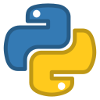

Dovednosti

|

|
 |
HTMLS HTML začínám a umím vytvořit jednoduché webové stránky, jako jsou tyto. |
JavaJavu se učím z tutoriálů na ITnetwork.cz, dokážu vytvořit jednoduchá konzolové i okenní aplikace |
PythonUčím se moderní jazyk z ITnetwork.cz |